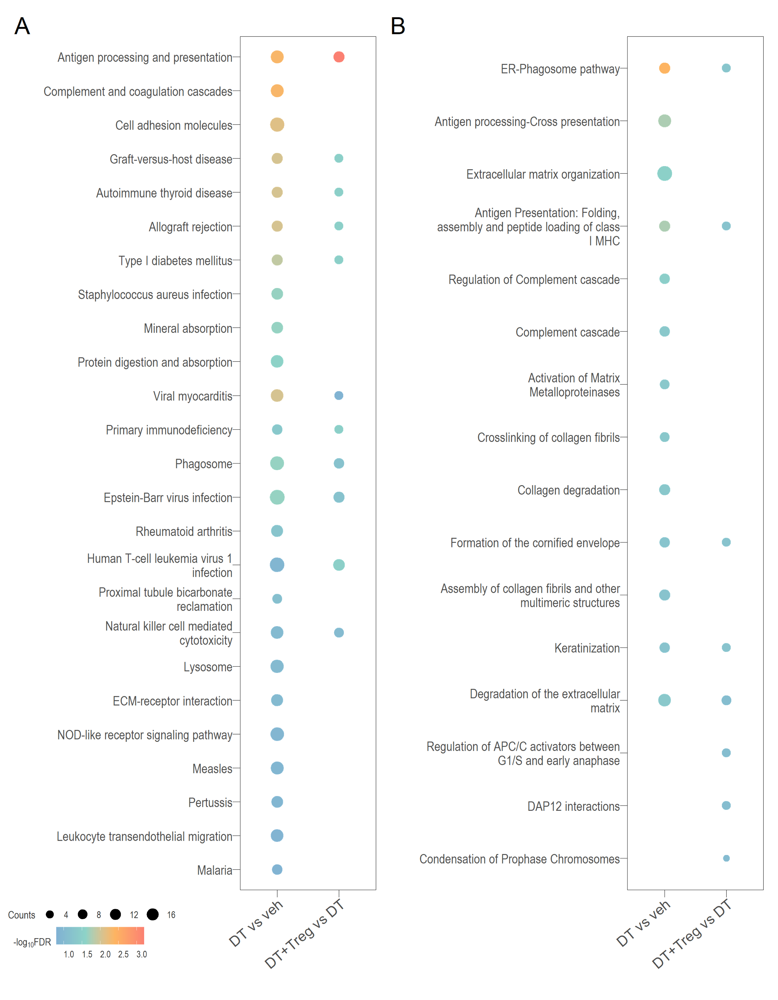

Last updated: 2024-08-02
Checks: 6 1
Knit directory: 5_Treg_uNK/1_analysis/
This reproducible R Markdown analysis was created with workflowr (version 1.7.1). The Checks tab describes the reproducibility checks that were applied when the results were created. The Past versions tab lists the development history.
The R Markdown file has unstaged changes. To know which version of
the R Markdown file created these results, you’ll want to first commit
it to the Git repo. If you’re still working on the analysis, you can
ignore this warning. When you’re finished, you can run
wflow_publish to commit the R Markdown file and build the
HTML.
Great job! The global environment was empty. Objects defined in the global environment can affect the analysis in your R Markdown file in unknown ways. For reproduciblity it’s best to always run the code in an empty environment.
The command set.seed(12345) was run prior to running the
code in the R Markdown file. Setting a seed ensures that any results
that rely on randomness, e.g. subsampling or permutations, are
reproducible.
Great job! Recording the operating system, R version, and package versions is critical for reproducibility.
Nice! There were no cached chunks for this analysis, so you can be confident that you successfully produced the results during this run.
Great job! Using relative paths to the files within your workflowr project makes it easier to run your code on other machines.
Great! You are using Git for version control. Tracking code development and connecting the code version to the results is critical for reproducibility.
The results in this page were generated with repository version a5cdd4e. See the Past versions tab to see a history of the changes made to the R Markdown and HTML files.
Note that you need to be careful to ensure that all relevant files for
the analysis have been committed to Git prior to generating the results
(you can use wflow_publish or
wflow_git_commit). workflowr only checks the R Markdown
file, but you know if there are other scripts or data files that it
depends on. Below is the status of the Git repository when the results
were generated:
Ignored files:
Ignored: .Rhistory
Ignored: .Rproj.user/
Untracked files:
Untracked: .DS_Store
Untracked: .gitignore
Untracked: 0_data/.DS_Store
Untracked: 0_data/rawData/.DS_Store
Untracked: 0_data/rawData/Jiang_TableS2_41421_2022_513_MOESM3_ESM.csv
Untracked: 0_data/rawData/MGI_tissues.tsv
Untracked: 0_data/rawData/Table S1 13578_2022_749_MOESM1_ESM (1).xlsx
Untracked: 0_data/rds_objects/cellchat.qs
Untracked: 0_data/rds_objects/cellchat_veh.qs
Untracked: 1_analysis/cellChat.Rmd
Untracked: 2_plots/.DS_Store
Untracked: 2_plots/LRheat.svg
Untracked: 2_plots/mgi_hmap_1.svg
Untracked: 2_plots/test.svg
Untracked: 2_plots/trophoblast_hmap_1.png
Untracked: 2_plots/trophoblast_hmap_1.svg
Untracked: 2_plots/trophoblast_hmap_2.svg
Untracked: 2_plots/trophoblast_hmap_3.svg
Untracked: 2_plots/trophoblast_hmap_4.svg
Untracked: 2_plots/trophoblast_hmap_5.svg
Untracked: 3_output/sig_de_JiangSC_subset.xlsx
Untracked: sampleHeatmap.rds
Unstaged changes:
Modified: 0_data/rds_objects/comp.rds
Modified: 0_data/rds_objects/dge.rds
Modified: 0_data/rds_objects/disease_function_sig.rds
Modified: 0_data/rds_objects/ipa_pathways.rds
Modified: 0_data/rds_objects/lm.rds
Modified: 0_data/rds_objects/lm_all.rds
Modified: 0_data/rds_objects/lm_sig.rds
Modified: 0_data/rds_objects/upstream_sig.rds
Modified: 0_data/rds_plots/deHmap_plots.rds
Modified: 0_data/rds_plots/go_combined_dotPlot.rds
Modified: 0_data/rds_plots/go_combined_parTerm_dotPlot.rds
Modified: 0_data/rds_plots/go_dotPlot.rds
Modified: 0_data/rds_plots/go_parTerm_dotPlot.rds
Modified: 0_data/rds_plots/go_parTerm_scatter.rds
Modified: 0_data/rds_plots/kegg_combined_dotPlot.rds
Modified: 0_data/rds_plots/kegg_dotPlot.rds
Modified: 0_data/rds_plots/kegg_path_Hmap.rds
Modified: 0_data/rds_plots/ma_plots.rds
Modified: 0_data/rds_plots/react_combined_dotPlot.rds
Modified: 0_data/rds_plots/react_dotPlot.rds
Modified: 0_data/rds_plots/vol_plots.rds
Modified: 140_treg_uNK.Rproj
Modified: 1_analysis/_site.yml
Modified: 1_analysis/deAnalysis.Rmd
Modified: 1_analysis/extraFigs.Rmd
Modified: 1_analysis/go.Rmd
Modified: 1_analysis/ipa.Rmd
Modified: 1_analysis/kegg.Rmd
Modified: 1_analysis/reactome.Rmd
Modified: 1_analysis/setUp.Rmd
Modified: 2_plots/1_QC/PC1_PC2.svg
Modified: 2_plots/1_QC/PC1_PC3.svg
Modified: 2_plots/1_QC/PC2_PC3.svg
Modified: 2_plots/1_QC/counts_after_filtering.svg
Modified: 2_plots/1_QC/counts_before_after_filtering.svg
Modified: 2_plots/1_QC/counts_before_filtering.svg
Modified: 2_plots/1_QC/library_size.svg
Modified: 2_plots/2_DE/heat_DT vs veh.svg
Modified: 2_plots/2_DE/heat_DT+Treg vs DT.svg
Modified: 2_plots/2_DE/heat_DT+Treg vs veh.svg
Modified: 2_plots/2_DE/ma_DT vs veh.png
Modified: 2_plots/2_DE/ma_DT+Treg vs DT.png
Modified: 2_plots/2_DE/ma_DT+Treg vs veh.png
Modified: 2_plots/2_DE/venn.png
Modified: 2_plots/2_DE/venn_2comp.png
Modified: 2_plots/2_DE/vol_DT vs veh.png
Modified: 2_plots/2_DE/vol_DT+Treg vs DT.png
Modified: 2_plots/2_DE/vol_DT+Treg vs veh.png
Modified: 2_plots/3_FA/go/combine_go_dot.svg
Modified: 2_plots/3_FA/go/dot_DT vs veh.svg
Modified: 2_plots/3_FA/go/dot_DT+Treg vs DT.svg
Modified: 2_plots/3_FA/go/dot_DT+Treg vs veh.svg
Modified: 2_plots/3_FA/go/parTerm_dot_DT vs veh.svg
Modified: 2_plots/3_FA/go/parTerm_dot_DT+Treg vs DT.svg
Modified: 2_plots/3_FA/go/parTerm_dot_DT+Treg vs veh.svg
Modified: 2_plots/3_FA/go/parentTerm_all.png
Modified: 2_plots/3_FA/go/semSim_dendrogram_DT vs veh.svg
Modified: 2_plots/3_FA/go/semSim_dendrogram_DT+Treg vs DT.svg
Modified: 2_plots/3_FA/go/semSim_dendrogram_DT+Treg vs veh.svg
Modified: 2_plots/3_FA/go/semSim_scatter_DT vs veh.svg
Modified: 2_plots/3_FA/go/semSim_scatter_DT+Treg vs DT.svg
Modified: 2_plots/3_FA/go/semSim_scatter_DT+Treg vs veh.svg
Modified: 2_plots/3_FA/go/upset_DT vs veh.svg
Modified: 2_plots/3_FA/go/upset_DT+Treg vs DT.svg
Modified: 2_plots/3_FA/go/upset_DT+Treg vs veh.svg
Modified: 2_plots/3_FA/ipa/combine_ipa_dot.png
Modified: 2_plots/3_FA/ipa/dnf_dot.png
Modified: 2_plots/3_FA/ipa/upstream_hmap.png
Modified: 2_plots/3_FA/ipa/venn_ipaDiseFunct.png
Modified: 2_plots/3_FA/kegg/combine_kegg_dot.svg
Modified: 2_plots/3_FA/kegg/heat_Antigen processing and presentation.svg
Modified: 2_plots/3_FA/kegg/heat_Epstein-Barr virus infection.svg
Modified: 2_plots/3_FA/kegg/heat_Natural killer cell mediated cytotoxicity.svg
Modified: 2_plots/3_FA/kegg/heat_Phagosome.svg
Modified: 2_plots/3_FA/kegg/kegg_dot_DT vs veh.svg
Modified: 2_plots/3_FA/kegg/kegg_dot_DT+Treg vs DT.svg
Modified: 2_plots/3_FA/kegg/kegg_dot_DT+Treg vs veh.svg
Modified: 2_plots/3_FA/kegg/kegg_upset_DT vs veh.svg
Modified: 2_plots/3_FA/kegg/kegg_upset_DT+Treg vs DT.svg
Modified: 2_plots/3_FA/kegg/kegg_upset_DT+Treg vs veh.svg
Modified: 2_plots/3_FA/reactome/combine_react_dot.svg
Modified: 2_plots/3_FA/reactome/react_dot_DT vs veh.svg
Modified: 2_plots/3_FA/reactome/react_dot_DT+Treg vs DT.svg
Modified: 2_plots/3_FA/reactome/react_dot_DT+Treg vs veh.svg
Modified: 2_plots/3_FA/reactome/react_upset_DT vs veh.svg
Modified: 2_plots/3_FA/reactome/react_upset_DT+Treg vs DT.svg
Modified: 2_plots/3_FA/reactome/react_upset_DT+Treg vs veh.svg
Modified: 2_plots/3_FA/reactome/venn_react.png
Modified: 2_plots/functionalHeat.png
Modified: 2_plots/sampleHeat.svg
Modified: 3_output/GO_sig.xlsx
Modified: 3_output/KEGG_all.xlsx
Modified: 3_output/KEGG_sig.xlsx
Modified: 3_output/de_genes_all.xlsx
Modified: 3_output/de_genes_sig.xlsx
Modified: 3_output/reactome_all.xlsx
Modified: 3_output/reactome_sig.xlsx
Modified: functions.Rmd
Note that any generated files, e.g. HTML, png, CSS, etc., are not included in this status report because it is ok for generated content to have uncommitted changes.
These are the previous versions of the repository in which changes were
made to the R Markdown (1_analysis/extraFigs.Rmd) and HTML
(docs/extraFigs.html) files. If you’ve configured a remote
Git repository (see ?wflow_git_remote), click on the
hyperlinks in the table below to view the files as they were in that
past version.
| File | Version | Author | Date | Message |
|---|---|---|---|---|
| Rmd | a5cdd4e | git | 2024-03-25 | switching os |
| Rmd | d0ea132 | Ha Manh Tran | 2024-02-15 | windows crashed |
| html | e9e7671 | tranmanhha135 | 2024-02-08 | Build site. |
| Rmd | 8da2e31 | tranmanhha135 | 2024-02-08 | workflowr::wflow_publish(here::here("1_analysis/*.Rmd")) |
| html | d8d23ee | tranmanhha135 | 2024-01-13 | im on holiday |
| html | 36aeb85 | Ha Manh Tran | 2024-01-13 | Build site. |
| Rmd | a957cff | Ha Manh Tran | 2024-01-13 | workflowr::wflow_publish(here::here("1_analysis/*Rmd")) |
| Rmd | c78dfac | tranmanhha135 | 2024-01-12 | remote from ipad |
# working with data
library(dplyr)
library(magrittr)
library(readr)
library(tibble)
library(reshape2)
library(tidyverse)
library(readxl)
library(showtext)
library(qs)
# Visualisation:
library(kableExtra)
library(ggplot2)
library(grid)
library(DT)
library(extrafont)
library(VennDiagram)
# Custom ggplot
library(ggplotify)
library(ComplexHeatmap)
library(gridExtra)
library(ggbiplot)
library(ggrepel)
library(rrvgo)
library(plotly)
library(GOSemSim)
library(data.table)
library(igraph)
# Bioconductor packages:
library(RColorBrewer)
library(CellChat)
library(edgeR)
library(limma)
library(Glimma)
library(clusterProfiler)
library(org.Mm.eg.db)
library(enrichplot)
library(patchwork)
library(pandoc)
library(knitr)
opts_knit$set(progress = FALSE, verbose = FALSE)
opts_chunk$set(warning=FALSE, message=FALSE, echo=FALSE)
# test <- ggplot(cars,aes(speed,dist))+ geom_point()
#
# ggsave(filename = "test.svg", plot = test, path = here::here("2_plots/"))
# ggsave(filename = "sampleHeat.svg",plot = sampleHeatmap,path = here::here("2_plots/"),width = 25.5,height = 20,units = "cm")
See Jia-Peng et al (2022) paper for more details
See Jiang et al (2023) for full paper
Large heatmaps contains all significant DEGs that matched genes
associated with known trophoblast cell types identified in Jiang et al
2023 from DT vs veh or
DT+Treg vs DT. Therefore DEGs that are COMMON and UNIQUE to
both comparisons.
LogCPM of all 127 significant DEGs that are expressed by various trophoblasts cell types identified in Jiang et al (2023) paper. Cell type annotations not include as that will be too overwhelming.
Grey means that gene was not significantly differentially expressed in that comparison.
Heatmap with all logFC values where significance indicated by asterisks
These heatmaps contains only DEGs that were significant in BOTH DT vs veh AND DT+Treg vs DT.
This includes significant DEGs that matched genes associated with known expression in placenta BUT NOT in uterus (based on MGI gene expression data)
Of these 38 genes, those which were also found in the sc trophoblast paper from Jiang et al 2023 paper were also annotated
IMPORTANTLY, this version contains only DEGs that were significant in BOTH DT vs veh AND DT+Treg vs DT.
Again, note that logFC were included for all DEGs but the significant ones in each comparison is marked by asterisk.
ONE CAVEAT: Since this list of 38 genes were obtained programmatically and not manually, this list may contains genes which may have only a few publications which supports it. I suggest using these 38 and going back to MGI for more exploration.
R version 4.4.1 (2024-06-14)
Platform: aarch64-apple-darwin20
Running under: macOS Sonoma 14.5
Matrix products: default
BLAS: /Library/Frameworks/R.framework/Versions/4.4-arm64/Resources/lib/libRblas.0.dylib
LAPACK: /Library/Frameworks/R.framework/Versions/4.4-arm64/Resources/lib/libRlapack.dylib; LAPACK version 3.12.0
locale:
[1] en_US.UTF-8/en_US.UTF-8/en_US.UTF-8/C/en_US.UTF-8/en_US.UTF-8
time zone: Australia/Adelaide
tzcode source: internal
attached base packages:
[1] stats4 grid stats graphics grDevices utils datasets
[8] methods base
other attached packages:
[1] knitr_1.48 pandoc_0.2.0 patchwork_1.2.0
[4] enrichplot_1.24.2 org.Mm.eg.db_3.19.1 AnnotationDbi_1.66.0
[7] IRanges_2.38.1 S4Vectors_0.42.1 clusterProfiler_4.12.2
[10] Glimma_2.14.0 edgeR_4.2.1 limma_3.60.4
[13] CellChat_2.1.2 Biobase_2.64.0 BiocGenerics_0.50.0
[16] RColorBrewer_1.1-3 igraph_2.0.3 data.table_1.15.4
[19] GOSemSim_2.30.0 plotly_4.10.4 rrvgo_1.16.0
[22] ggrepel_0.9.5.9999 ggbiplot_0.6.2 gridExtra_2.3
[25] ComplexHeatmap_2.20.0 ggplotify_0.1.2 VennDiagram_1.7.3
[28] futile.logger_1.4.3 extrafont_0.19 DT_0.33
[31] kableExtra_1.4.0 qs_0.26.3 showtext_0.9-7
[34] showtextdb_3.0 sysfonts_0.8.9 readxl_1.4.3
[37] lubridate_1.9.3 forcats_1.0.0 stringr_1.5.1
[40] purrr_1.0.2 tidyr_1.3.1 ggplot2_3.5.1
[43] tidyverse_2.0.0 reshape2_1.4.4 tibble_3.2.1
[46] readr_2.1.5 magrittr_2.0.3 dplyr_1.1.4
loaded via a namespace (and not attached):
[1] vroom_1.6.5 Biostrings_2.72.1
[3] vctrs_0.6.5 RApiSerialize_0.1.3
[5] digest_0.6.36 png_0.1-8
[7] shape_1.4.6.1 registry_0.5-1
[9] git2r_0.33.0 parallelly_1.38.0
[11] magick_2.8.4 MASS_7.3-61
[13] httpuv_1.6.15 foreach_1.5.2
[15] qvalue_2.36.0 withr_3.0.1
[17] xfun_0.46 ggfun_0.1.5
[19] ggpubr_0.6.0 memoise_2.0.1
[21] gson_0.1.0 systemfonts_1.1.0
[23] ragg_1.3.2 tidytree_0.4.6
[25] GlobalOptions_0.1.2 pbapply_1.7-2
[27] KEGGREST_1.44.1 promises_1.3.0
[29] httr_1.4.7 rstatix_0.7.2
[31] globals_0.16.3 stringfish_0.16.0
[33] rstudioapi_0.16.0 UCSC.utils_1.0.0
[35] generics_0.1.3 DOSE_3.30.2
[37] ggalluvial_0.12.5 zlibbioc_1.50.0
[39] ggraph_2.2.1 polyclip_1.10-7
[41] GenomeInfoDbData_1.2.12 SparseArray_1.4.8
[43] xtable_1.8-4 doParallel_1.0.17
[45] evaluate_0.24.0 S4Arrays_1.4.1
[47] hms_1.1.3 GenomicRanges_1.56.1
[49] irlba_2.3.5.1 colorspace_2.1-1
[51] ggnetwork_0.5.13 NLP_0.2-1
[53] reticulate_1.38.0 treemap_2.4-4
[55] later_1.3.2 viridis_0.6.5
[57] ggtree_3.12.0 lattice_0.22-6
[59] NMF_0.27 future.apply_1.11.2
[61] shadowtext_0.1.4 cowplot_1.1.3
[63] matrixStats_1.3.0 pillar_1.9.0
[65] nlme_3.1-165 iterators_1.0.14
[67] sna_2.7-2 gridBase_0.4-7
[69] compiler_4.4.1 RSpectra_0.16-2
[71] stringi_1.8.4 SummarizedExperiment_1.34.0
[73] plyr_1.8.9 crayon_1.5.3
[75] abind_1.4-5 gridGraphics_0.5-1
[77] locfit_1.5-9.10 graphlayouts_1.1.1
[79] bit_4.0.5 fastmatch_1.1-4
[81] whisker_0.4.1 codetools_0.2-20
[83] textshaping_0.4.0 openssl_2.2.0
[85] crosstalk_1.2.1 bslib_0.8.0
[87] slam_0.1-52 GetoptLong_1.0.5
[89] tm_0.7-13 mime_0.12
[91] splines_4.4.1 circlize_0.4.16
[93] Rcpp_1.0.13 HDO.db_0.99.1
[95] cellranger_1.1.0 Rttf2pt1_1.3.12
[97] blob_1.2.4 utf8_1.2.4
[99] here_1.0.1 clue_0.3-65
[101] fs_1.6.4 listenv_0.9.1
[103] ggsignif_0.6.4 Matrix_1.7-0
[105] statmod_1.5.0 tzdb_0.4.0
[107] svglite_2.1.3 tweenr_2.0.3
[109] pkgconfig_2.0.3 pheatmap_1.0.12
[111] network_1.18.2 tools_4.4.1
[113] cachem_1.1.0 RSQLite_2.3.7
[115] viridisLite_0.4.2 DBI_1.2.3
[117] fastmap_1.2.0 rmarkdown_2.27
[119] scales_1.3.0 broom_1.0.6
[121] sass_0.4.9 coda_0.19-4.1
[123] FNN_1.1.4 carData_3.0-5
[125] farver_2.1.2 tidygraph_1.3.1
[127] scatterpie_0.2.3 yaml_2.3.10
[129] workflowr_1.7.1 MatrixGenerics_1.16.0
[131] cli_3.6.3 lifecycle_1.0.4
[133] askpass_1.2.0 lambda.r_1.2.4
[135] backports_1.5.0 BiocParallel_1.38.0
[137] timechange_0.3.0 gtable_0.3.5
[139] rjson_0.2.21 umap_0.2.10.0
[141] parallel_4.4.1 ape_5.8
[143] jsonlite_1.8.8 bit64_4.0.5
[145] yulab.utils_0.1.5 BiocNeighbors_1.22.0
[147] RcppParallel_5.1.8 futile.options_1.0.1
[149] jquerylib_0.1.4 highr_0.11
[151] lazyeval_0.2.2 shiny_1.9.1
[153] htmltools_0.5.8.1 GO.db_3.19.1
[155] rappdirs_0.3.3 formatR_1.14
[157] glue_1.7.0 XVector_0.44.0
[159] rprojroot_2.0.4 treeio_1.28.0
[161] extrafontdb_1.0 R6_2.5.1
[163] DESeq2_1.44.0 labeling_0.4.3
[165] cluster_2.1.6 rngtools_1.5.2
[167] wordcloud_2.6 aplot_0.2.3
[169] GenomeInfoDb_1.40.1 statnet.common_4.9.0
[171] DelayedArray_0.30.1 tidyselect_1.2.1
[173] ggforce_0.4.2 xml2_1.3.6
[175] car_3.1-2 future_1.34.0
[177] munsell_0.5.1 htmlwidgets_1.6.4
[179] fgsea_1.30.0 rlang_1.1.4
[181] fansi_1.0.6